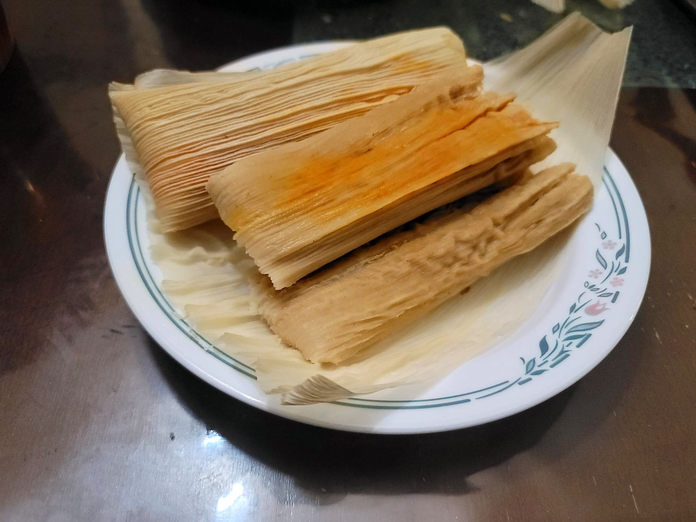

Tamales

Ingredients:
Tamales:
- 8 oz Dried corn husks
- 4 cups (473 g) Masa harina
- 1 1/3 cups (158 g) Lard
- 3 cups any Broth, beef, pork, chicken, or any broth
- 1 tsp Baking powder
- 1/2 tsp Cumin
- 1/2 tsp Salt
Filling options:
Instructions:
- Place the corn husks into a large container and cover completely with boiling water. Let soak for 45 minutes or until softened. Then drain from the water.
- Place the lard and 2 tablespoons of broth into a large mixing bowl. Cream together with an electric mixer until fluffy, 3-5 minutes.
- In a separate bowl, combine the masa harina, baking powder, cumin, and salt. Whisk together. Slowly add the dry ingredients into the large mixing bowl with the lard while beating constantly with the electric mixer until completely mixed.
- Slowly pour in the rest of the broth while beating with the electric mixer constantly on high speed. The dough should become easily spreadable like peanut butter. Cover the bowl with plastic wrap to prevent the dough from drying out.
- Place a corn husk, glossy side up, onto a prepared work surface. Scoop roughly 1/4 cup of the dough onto the wider end of the husk. Place a piece of plastic wrap over the dough press down onto it with your hands to spread it into a thin layer, about 1/4 inch thick, over the wider half of the husk. Remove the plastic wrap and place 1-2 tablespoons of the filling into a thin lengthwise line over the masa. Fold in one long side of the husk over the filling, and then the other long side, over the first. Then fold the bottom of the husk up. Optionally tie the tamale with an excess strip of corn husk. repeat for the rest of the masa.
- Place a coin into the bottom of a steamer. This allows you to know when the water starts to boil. Then prepare the steamer normally. Add in the tamales standing up. Cover the tamales with some excess soaked corn husks or a wet towel to prevent water from dripping on them.
- Cover and heat over high heat. Once the coin at the bottom of the steamer starts to rattle, let the tamales cook for about 45-60 minutes. They are finished when you can unwrap one and the masa does not stick to the corn husk.
- Serve hot with some salsa or chili sauce.